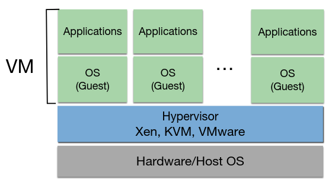
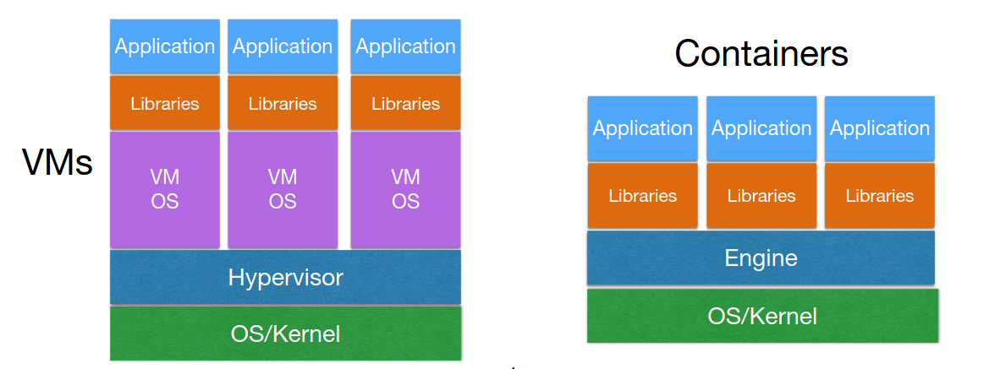
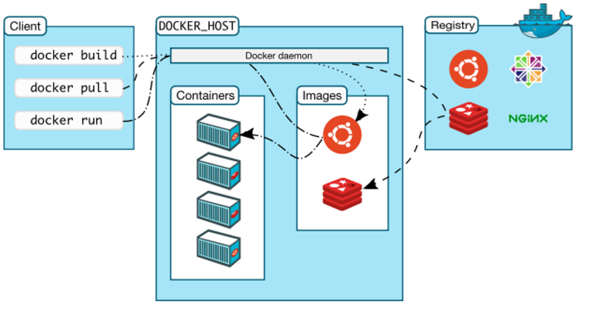

Teórica 01
Tem por objetivo responder à questão "Como pôr aplicações e serviços a correr?".
Desafios
- Instalação
- Múltiplos componentes com requisitos diferentes;
- Hardware heterogéneo.
- Configuração e controlo
- Monitorização do serviço constante.
Infrastructure as a code
- Hardware/Software/Configurações com scripts;
- Scripts podem ser utilizados nos processos Agile para replicar as condições desejadas.
Tópicos
- Arquiteturas de sistemas distribuídos e deployment;
- Cloud Computing;
- Monitorização e avaliação.
Agenda
- Projeto (50%)
- Mínimo de 10 valores;
- Entrega do Relatório: 14/01/23;
- Apresentação: 16/01/23 até 20/01/23.
- Teste (50%)
- Mínimo de 8 valores;
- 07/01/2023.
Teórica 02
Aplicações Distribuídas
Porquê usá-las?
- Modularidade;
- Desempenho;
- Disponibilidade/Resiliência.
Sistemas Monolíticos
Múltiplos serviços para múltiplos alvos, mas tudo a correr numa única máquina... Ou seja, tipos de sistemas não distribuídos.
Desvantagens:
- Ponto de falha único;
- Carga não é distribuída, o que provoca um ponto de contenção;
- Os serviços não são isolados.
Tipicamente, queremos ter estas 3 garantias nos nossos serviços:
Replicação
- Múltiplas cópias dos mesmos dados e funcionalidades;
- Providencia resiliência e, no caso de permitir que um cliente se conecte a outro servidor, poder de escala.
Particionamento
No caso de particionar apenas os dados, podemos dar-lhe o nome de sharding.
- O servidor é divido horizontalmente (sharding);
- Oferece poder de escalabilidade;
- Pode ser aplicado a computação, dados, etc...
Arquitetura Orientada aos Serviços (SOA)
Cada componente da aplicação deve correr num servidor diferente.
- Divide o servidor de forma vertical;
- Providencia escalabilidade e modularidade;
- Isto pode causar problemas na decomposição de serviços:
- Quão micro deve ser?;
- Tem um deploy complexo.
Nota:
- Escala Vertical: Para escalar, podemos aumentar os recursos do server;
- Escala Horizontal: Para escalar, podemos aumentar o número de servidores.
Arquiteturas Distribuídas
Veja-se uns exemplos de arquiteturas distribuídas:
- Client-server;
- Servidor proxy;
- Master-server;
- Server group;
- Multi-tier;
- Bus.
Client-server
- As funcionalidades e os dados encontram-se no servidor;
- O cliente tem uma interface e fala com o servidor através de um protocolo num stub;
- Um stub é um pacote de middleware presente no lado do cliente.
- Desvantagens:
- Ponto único de falha;
- Gargalo na escalabilidade.
Proxy Server
- Adiciona-se um proxy entre o cliente e múltiplos servers;
- Do lado do cliente é como se existisse um único servidor que é o proxy;
- Vantagens:
- Permite o balanceamento do trabalho (maior escala e maior disponibilidade);
- Desvantagens:
- Ponto único de falha;
- Não possui qualquer estado e tem um trabalho mais leve, o que provoca uma menor probabilidade de falha.
- Tem um número máximo de conexões simultâneas.
- Ponto único de falha;
Master Server
Também conhecido por Master-Slave.
- Cliente entra em contacto com o master para saber onde se encontra o recurso pretendido;
- Após saber onde é que o recurso pretendido se encontra, entra em contacto diretamente com o servidor.
- Vantagens:
- Menos informação no ponto único de falha.
- Desvantagens:
- Ponto único de falha.
Server Group
- Todos os servers podem responder a pedidos;
- Tem uma coordenação difícil;
- Vantagens:
- Muito resiliente.
- Desvantagens:
- Muito pesado (o que provoca um baixo número de clientes) devido à lógica de balanceamento.
Bus
- Lógica de barramento;
- Participantes produzem e consomem informação para o bus;
- Um nó pode ser servidor e cliente;
- Os participantes devem ter um protocolo comum entre si;
- Vantagens:
- Altamente flexível.
Multi-tier
- Cada servidor atua como um cliente do nível inferior (ao estilo do modelo OSI);
- Permite o deploy independente e o escalonamento de diferentes funcionalidades;
- Cada camada tem um stub e protocolo para comunicar com a camada inferior;
- Vantagens:
- Grande modularidade.
- Desvantagens:
- Muitos pontos únicos de falha.
ATENÇÃO:
De forma a termos a melhor solução possível, podemos combinar diversas arquiteturas.
Estados em multi-tier
- Não há estados nas camadas superiores (p.e. web server);
- Estados transientes/em cache nas camadas do meio;
- Estados persistentes nas últimas camadas.
- Quanto mais para baixo se vai na pilha, mais complexa fica a replicação.
Teórica 03
Serviços de Cloud
- Os serviços de cloud podem ser divididos em 3 abstrações principais:
- Infrastructure-as-a-Service (IaaS);
- Platform-as-a-Service (PaaS);
- Software-as-a-Service (SaaS).
Infrastructure-as-a-Service (IaaS)
-
Providencia recursos de hardware virtualizados como computação, armazenamento e networking;
-
Os recursos são alocados on demand e só se paga consoante o seu uso;
-
Exemplos:
- Para computação:
- Amazon EC2;
- Google Compute Engine.
- Para armazenamento:
- Amazon S3.
- Para computação:
-
Tem data centers espalhados pelo mundo, cada um com cerca de 80 000 servidores.
Platform-as-a-Service (PaaS)
-
Oferece encapsulamento de um ambiente de desenvolvimento abstrato que pode ser usado para desenvoler, correr, ou dar deploy de apps.
-
Exemplo:
- Google App Engine.
-
Baseia-se em instâncias de containers;
-
Suporta múltiplas linguagens, ferramentas e APIs;
-
Providencia controlo de versões, testes, monitorização e features de logging.

Software-as-a-Service (SaaS)
- Contém aplicações completas ou software genérico, tal como bases de dados;
- Oferecido como um serviço e acessível através de um serviço web ou através de um web browser;
- Exemplos:
- SalesForce.com;
- Google Apps (p.e. Gmail).

OpenStack
- Software Open-Source que permitem a criação de clouds públicas e privadas;
- Controla pools de computação, armazenamento e networking através de um datacenter;
- Controlado através de uma dashboard ou via a API da OpenStack.
Cinder
- Armazenamento em bloco
- Virtualiza a gestão de dispositivos de blocos de armazenamento;
- Fornece aos end users uma API de auto-serviço para pedir e consumir recursos sem ter conhecimento acerca da verdadeira localização ou do tipo de dispositivo em que se encontra o armazenamento.
Swift
- Grande disponibilidade, distribuídos, armazenamento de objetos/blobs eventualmente consistentes;
- Ideal para guardar dados não estruturados que podem crescer sem fronteiras.
Neutron
- Software-Defined-Network (SDN)
- Focado em fornecer Networking-as-a-Service (NaaS) em ambientes de computação virtuais;
- Coloca a topologia da rede e o endereçamento de forma abstrata.
Telemetry
- Serviço de Monitorização
- Coleciona métricas de monitorização para recursos físicos e virtuais;
- Gera métricas para futura análise;
- Dá trigger de ações quando atinge certas regras (p.e. lançar mais instâncias de uma dada VM quando um threshold de CPU é alcançado).
De IaaS para PaaS
- De alocação gerida e provisionamento de recursos para infraestrutura gerida;
- Recursos atuais tornam-se transparentes;
- Foco na aplicação que é o objeto de deploy;
- A interface é o ambiente de programação com APIs para serviços IaaS/SaaS;
- O utilizador pode focar-se na funcionalidade para dar deploy ao invés dos recursos necessários para isso.
De PaaS para SaaS
- Providencia serviços específicos;
- Gere componentes de software que exportam as suas APIs tradicionais;
- Sistemas de Gestão de Bases de Dados são exemplos disto;
- Não tem item de deploy - a BD está exposta através do cliente e é utilizada como uma BD tradicional com uma configuração mínima e acesso remoto.
IaaS, PaaS e SaaS: sistemas distribuídos complexos
- Virtualização;
- Provisionamento;
- Monitorização;
- Reporting;
- Billing;
- ...
- Interoperação entre os pontos acima mencionados.
Vantagens IaaS, PaaS e SaaS
Conveniência
- IaaS
- Evita custos upfront na gestão da infraestrutura e hardware;
- Permite o deploy "fácil" de aplicações legacy.
- PaaS
- Foca-se no desenvolvimento da aplicação em si e nos seus requisitos;
- Desenvolvimento, deployment, debugging e ferramentas de benchmarking powerful já no seu local.
- SaaS
- Aproveita componentes existentes (bases de dados, servidores de aplicação e servidores web).
Velocidade
- IaaS
- Infraestrutura já se encontra instalada e configurada.
- PaaS
- Framework de desenvolvimento já se encontra instalada e configurada.
- SaaS
- Rápida integração de soluções de software em cloud.
Elasticidade
- IaaS
- Ilusão de recursos virtuais infinitos;
- Aumento e diminuição do poder de computação, espaço de armazenamento e outros recursos on demand;
- Precisa de ser configurado manualmente ou que se recorra a apps third-party.
- PaaS e SaaS
- Não é necessário gerir a elasticidade manualmente.
Desvantagens IaaS, PaaS e SaaS
Perda de Controlo
- IaaS
- Perde-se o controlo sobre o hardware específico e o software de virtualização;
- Sem possibilidade de fine tuning e otimização da infraestrutura.
- PaaS
- Sem controlo sob o hardware específico e da plataforma de PaaS;
- Gestão, fine tuning e monitorização é reduzida às ferramentas providenciadas pela plataforma.
- SaaS
- Aplicações cloud third-party.
Segurança
- IaaS, PaaS e SaaS
- Tão seguro como o providenciador \( \rightarrow \) qualquer vulnerabilidade do providenciador será uma vulnerabilidade da aplicação;
- Correções às vulnerabilidades devem ser feitas diretamente no providenciador;
- Se o providenciador falhar (mesmo que seja pouco provável), a aplicação falha e a recuperação está fora do controlo do dono da aplicação;
- Privacidade dos dados em infraestruturas third party.
Teórica 04
Aprovisionamento de Sistema (System Provisioning)
Aprovisionamento
Ação de providenciar, oferecer algo para uso.
Trata-se da configuração de servidores e recursos. Prepara o sistema para a fase de deployment.
Exemplos de ações:
- Aprovisionamento de Servidor;
- Aprovisionamento de Armazenamento;
- Aprovisionamento de Rede;
- Aprovisionamento de VMs;
- Aprovisionamento de Utilizadores.
Deployment
Processo de instalar ou dar upgrade de uma aplicação ou serviço num servidor.
- Instalação ou upgrade de aplicações web:
- Ficheiros;
- Migrações;
- Assets.
- Instalação ou upgrade de serviços de rede;
- O scope é o serviço ou a aplicação.
Estas 2 etapas são muito chatas...
- Processo repetitivo;
- Bom para automação.
- Pode ter sistemas muito diferentes;
- É preferível manter um inventário dos diferentes sistemas e correr as tasks de forma sequencial ou paralela.
- Provavelmente, terá ajustes ao longo do tempo;
- Ter um controlo de versões pode ser muito positivo.
- Por vezes, pode consumir muito tempo.
- Deixar a máquina a trabalhar sozinha pode ser muito positivo.
Gestão de Configurações
Uma forma de controlar trocas sistemáticas no sistema mantendo a sua integridade ao longo do seu ciclo de vida.
- Configuração expressa num dialeto comum;
- Resultado da configuração previsível;
- Configuração evolui com a infraestrutura;
- Documentação da infraestrutura como um efeito positivo;
- Histórico completo de trocas quando é utilizado um sistema de gestão do source code;
- Alterações são observáveis;
- Automação do processo;
- Cada unidade de trabalho é expressa como uma receita.
Receitas/Reutilização/Automação
Define automação de tarefas via um conjunto de diretivas expressas numa dada linguagem (p.e. bash).
Existem diversas ferramentas para ajudar neste processo:

Nesta UC iremos utilizar Ansible.
O workflow passa a ser da seguinte forma:

NOTA:
scp é um comando Unix que permite copiar ficheiros entre servidores e máquinas locais.
Ansible
Vocabulário
- Inventário:
- Grupo dos alvos de deployment.
- Módulo:
- Unidade de trabalho reutilizável distribuída com Ansible ou desenvolvida para ele.
- Task:
- Combinação de módulos e argumentos de forma a efetuar uma dada ação.
- Handlers:
- Task especial para responder a uma dada notificação.
- Templates:
- Permite a criação de configurações dinâmicas.
- Role:
- Componente configurável e reutilizável que encapsula variáveis, templates, tasks, handlers...
- Playbook:
- Descreve políticas para sistemas remotos.
Overview do Ansible
- Execução de receitas via SSH ou localmente sem a necessidade de agentes;
- Receitas são expressas em ficheiros YAML;
- Receitas criadas através de módulos e diretivas de tasks;
- Receitas organizadas em roles e playbooks;
- Hosts alvo são definidos no inventário;
- Idempotência.
- Tarefas só correm no caso do alvo diferir daquilo que é expectável que aconteça depois de correr.
Exemplos de Ficheiros
Inventário
Tem extensão .inv. Por exemplo, hosts.inv:
[host]
host-[01:99].example.com
[database]
db-01.example.com
staging.example.com
Playbook
- hosts: all
vars:
username: someuser
shell: /bin/bash
tasks:
- name: create unprivileged user
user:
name: '{{username}}'
password: 'secretpasswordhash'
shell: '{{shell}}'
- name: Set SSH authorized_key
authorized_key:
user: '{{username}}'
state: present
key: "{{ lookup('file', '/home/' + someuser + '/.ssh/id_rsa.pub') }}
Para mais informações acerca do Ansible deve consultar-se a sua documentação.
Teórica 05
Virtualização
- Técnica que permite criar algo virtual sobre um recurso;
- A ideia é criar uma abstração sobre um recurso qualquer (software ou hardware);
- Na cloud, falamos de virtualização a, praticamente, todos os níveis.
Exemplos:
- Redes Virtuais;
- Memória Virtual;
- Volumes de Armazenamento Lógicos.
Vantagens
Heterogeniedade
- Recursos virtuais podem ser providenciados sob diferentes recursos de hardware;
- Um recurso virtual poderá correr diferentes aplicações ou serviços utilizando o mesmo hardware (p.e. VMs a correrem em diferentes Sistemas Operativos).
Transparência
- A interação com uma VM, pela parte do utilizador, é semelhante à interação com uma máquina física.
Isolamento
- Os recursos virtuais são isolados uns dos outros em termos de:
- Segurança;
- Um cliente não sabe onde é que a máquina virtual se encontra a correr, nem que outras máquinas virtuais se encontram a correr naquele servidor.
- Desempenho;
- Depende do componente em questão.
- Falhas (incluido sistemas operativos ou dados corrompidos).
- A falha de 1 VM não afeta as restantes.
- Segurança;
Otimização de Recursos
- Os recursos físicos podem ser otimizados de forma a serem utilizados por diversos clientes.
- Consolidação do Servidor;
- Menos Custos.
Gestão + Fácil
- A gestão de recursos virtuais é mais simples do que a gestão de recursos físicos.
- Por exemplo, a migração e backups de VMs é muito mais fácil.
Desvantagens
Desempenho
- Geralmente, a virtualização de recursos traz uma penalty de desempenho associada.
- Devido à "tradução" de pedidos lógicos para pedidos físicos.
Overprovisioning
- Dar deploy a mais recursos virtuais do que os disponíveis fisicamente pode gerar degradação de desempenho.
Segurança
- O isolamento pode não ser bem feito (p.e. mal endereçado);
- Existem alguns bugs conhecidos nos hypervisors;
- Não oferece segurança contra quem acede diretamente ao servidor;
- Num sistema tradicional, um atacante teria acesso a apenas 1 serviço, no entanto, neste tipo de sistemas, um atacante terá acesso a uma grande quantidade de serviços.
Resiliência
- Se um servidor falhar, múltiplos serviços irão falhar.
Máquinas Virtuais
Porque é que surgiram?
- Para permitir correr diferentes Sistemas Operativos em simultâneo no mesmo servidor físico;
- Trocar uma aplicação/serviço para que este corra num Sistema Operativo diferente é uma tarefa difícil e custosa.
Arquitetura
- As instruções do Guest OS (isto é, da VM) são intercetadas, traduzidas e executadas no hardware físico.

Hypervisor
- Também conhecido por VMM (Virtual Machine Monitor);
- Controla a interação low-level entre as VMs e o sistema em que estas estão a correr;
- Providencia acesso à CPU, RAM, disco e recursos de hardware de rede do host.
CPU do Host
- Time Slicing - o processamento de pedidos são divididos e partilhados ao longo das VMs;
- Se tivermos vários cores \( \rightarrow \) utilização de 1 core por VM e evita-se este processo.
- Semelhante a correr múltiplos processos no host;
- Dar commitment a demasiados vCPUs pode gerar a pior desempenho.
RAM e Armazenamento Persistente do Host
- Cada VM tem 1 parte de RAM e 1 parte de disco do host associada;
- Não deverá interferir com a parte dos outros (tanto entre VMs, como com o host);
- De forma a manter o isolamento entre recursos;
- O hypervisor está responsável por não deixar o host interferir com a parte da VM.
- Armazenamento partilhado entre VMs poderá controlar múltiplos escritores/leitores eficientemente;
- Recursos de Armazenamento podem ser alocados conforme pedido (isto é, thin-provisioning).
Rede do Host
- As VMs partilham a largura de banda e podem ser configuradas com diferentes setups de rede:
- Host-only: Partilha a rede do host e só tem acesso ao host;
- NAT: Traduz o IP da VM para o IP do host e comunica com a rede exterior utilizando o IP do host. A comunicação da rede com a VM pode ser feita através de um protocolo de forwarding entre portas de rede;
- Bridge: Utiliza o hypervisor para obter um IP próprio para a VM. A VM é vista, na rede, como um nó de rede físico.
Modos de Virtualização
Full Virtualization
- O Guest OS é tratado de uma forma completamente abstrata ao hardware do host em que está a correr (p.e. VirtualBox);
- Vantagem: Não efetuar modificações para o Guest OS funcionar indica que existe uma maior quantidade de Sistemas Operativos suportados e uma maior facilidade de migração e portabilidade de VMs;
- Desvantagem: Todas as instruções da VM têm de ser traduzidas no hypervisor o que poderá provocar uma queda de desempenho.
- O hardware tem evoluído para combater isto.
- A introdução de Hardware-Assisted Virtualization (p.e. Intel VT-x, AMD-V) traz hardware específico para combater a penalty por tradução de instrução.
- O hardware tem evoluído para combater isto.
Paravirtualization
- Requere gatilhos/modificações ao Sistema Operativo da VM de forma a dar bypass às traduções de instruções custosas (p.e. Xen);
- Vantagem: Melhor performance, visto que não existe a tradução de instruções;
- Desvantangem: O Sistema Operativo do Guest tem de ser modificado, o que é pior para manutenção e portabilidade.
Tipos de Virtualização
Tipo 1 - Bare Metal Hypervisor
- O Hypervisor não precisa de Sistema Operativo de propósito geral no servidor de host (p.e. VMWare ESX);
- O Hypervisor é deployed diretamente no harware como se fosse um Sistema Operativo de pequena dimensão;
- Tem uma melhor performance, mas precisa de um suporte à virtualização específico no hardware, ou seja, é preciso hardware específico para correr isto.
Tipo 2 - Hosted Hypervisor
- O Hypervisor é lançado num Sistema Operativo "normal" (p.e. VirtualBox);
- Tem um pior desempenho, visto que o Sistema Operativo não é otimizado para virtualização;
Nota
- O KVM e o Xen apresentam uma solução híbrida dos 2 tipos apresentados.
- Os seus hypervisors precisam da instalação de módulos de kernel específicos em Sistemas Operativos "normais".
Teórica 06
Virtualização
Containers
- Ambiente mais leve que permite ter aplicações a correr e ser bastante portável.
- O Sistema Operativo não se encontra quebrado do host.
- Ao invés disso, isola conjuntos de processos e recursos.
- O Sistema Operativo não se encontra quebrado do host.
- Porque é que são úteis?
- Permitem correr diferentes versões da mesma aplicação na mesma máquina;
- São fáceis de portar e de migrar;
- A instalação é feita uma única vez.
Linux Containers
- São muito leves e não precisam da virtualização de recursos;
- A engine isola e configura os recursos;
- O sistema do host é compartimentado para cada container em termos de CPU e I/O;
- Existe uma noção de isolamento entre containers.

Building Blocks
- Namespaces (Isolamento)
- Ajudam a compartimentar grupos de processos, isto é, a que grupos cada container poderá aceder;
- Permite a partilha de recursos do host entre diversos containers sem conflitos.
- Control Groups (Gestão de Recursos)
- Permite o alocamento de recursos entre grupos de processos;
- Restringe a quantidade de recursos utilizada por cada container;
- Um grupo de processos terá acesso a um recurso da máquina, no entanto, apenas poderá usar parte dele.
- SELinux (Segurança)
- Garante segurança de forma a que um container não seja capaz de interferir com outros containers ou com o sistema host;
- Garante controlo de acesso e políticas de segurança.
Tipos
- OS Containers
- Simulam um sistema operativo leve;
- Exemplo: LXC.
- Application Containers
- Focado em empacator uma app e as suas definições;
- Cada aplicação é vista como um processo independente;
- Exemplo: Docker.
Docker

Cliente Docker
- Componente utilizada para interagir com a plataforma do Docker;
- Envia pedidos para o Daemon (engine) do Docker;
- Gere tudo aquilo que se possa fazer com o cliente;
- Expõe a API do Docker para:
- Correr e gerir containers e redes;
- Leitura de logs e métricas;
- Extração e gestão de imagens.
Daemon do Docker
- Utiliza a API do Docker para receber pedidos do Cliente Docker;
- Gere imagens do Docker, Containers e Redes.
Objetos do Docker
- Image - ficheiro imutável que contém o source code, as bibliotecas e outros ficheiros necessários para uma dada aplicação correr;
- Container - instância runnable de uma Image.
Registo do Docker
- Repositório de imagens do Docker.
Kubernetes
- Automatizam o deployment, o escalonamento e a gestão de containers;
- Garantias:
- Gestão de redes;
- Orquestração de armazenamento modular;
- Agendamento, self-healing e escalonamento.
Cluster de Kubernetes
- Os clientes interagem com o nodo Master (p.e. através do
kubectlno terminal); - O nodo Master gere o cluster (p.e. nodos worker, pods, redes, armazenament, ...).

Pod, Deployument e Service
- Pod: unidade computacional composta por um ou mais containers;
- Deployment: especifica o ambiente onde vão correr os pods;
- Service: expõe um grupo de pods como um serviço de rede.
Rede
- Cada pod tem um endereço de IP único no cluster;
- As conexões entre pods (mesmo em nodo worker diferentes) pode ser gerida através dos overlays de redes.
Armazenamento
- Os pods podem aceder a volumes de armazenamento providenciados por diferentes backends de armazenamento.
- Armazenamento Efémero: os dados sobrevivem apenas durante a sessão;
- Armazenamento Persistente: os dados sobrevivem mesmo após as sessões.
Containers vs Máquinas Virtuais
- A escolha deve depender dos objetivos do utilizador! As diferentes soluções são melhores para diferentes cenários.
- VMs são úteis quando é necessária uma virtualização full server (do Sistema Operativo);
- Containers são úteis para gerir diferentes bibliotecas/aplicações.
Vantagens dos Containers
- Mais rápidos;
- Melhor utilização de recursos;
- Podem ser lançadas em servidores virtualizados ou físicos.
Desvantagens dos Containers
- Pior isolamento/segurança (Kernel e Sistema Operativo são partilhados);
- Menor flexibilidade a correr em diferentes Sistemas Operativos.
Teórica 07
Armazenamento
- Porque é que estes sistemas são importantes?
- Ter dados armazenados, pesistentes e disponíveis;
- Boa performance.
Tipos
Arquivo
- Cópias de coisas que tinha e que pretendo guardar;
- Precisam de ser muito rápidos em termos de débito (a latência é praticamente irrelevante);
- Padrão Sequencial;
- Padrões aleatórios causam lentidão.
- Geralmente, só se irão escrever estes dados uma única vez.
- Exemplo: Amazon Glacier (serviço na cloud).
Backup
- Precisam de ser muito rápidos em termos de débito;
- Padrão Sequencial;
- Em alguns casos, os dados podem ser atualizados;
- Os dados são atualizados através de diffs (muito leves);
- Em alguns casos, apenas os diffs são guardados entre backups da mesma fonte.
- Exemplo: Amazon S3 (serviço da cloud).
Armazenamento Primário
O armazenamento primário pode ser constituído não apenas pela RAM, como também por discos.
- Desejável que tenham grande débito e baixa latência;
- Grandes quantidades de dados podem ser escritos/lidos;
- Escritas/Leituras pequenas devem ser eficientes.
- Padrão Sequencial ou Aleatório;
- Os dados e os metadados apresentam uma grande carga de trabalho;
- Dados podem ser atualizados com frequência.
- Exemplo: Amazon EBS (serviço da cloud).
Meios de Armazenamento
- Tape;
- Armazenamento de Arquivo.
- HDD;
- Aramzenamento de Arquivo, Backup ou Primário.
- SSD (incluindo NVMe);
- Armazenamento Primário.
- Memória Persistente;
- Armazenamento Primário.
- RAM.
- Armazenamento Primário.
Interfaces de Armazenamento
-
Block Device;
- Interface mais próxima do disco;
- Os dados são geridos como blocos.
- Exemplos: iSCSI, Amazon EBS, Ceph, ...
-
Sistema de Ficheiros:
- Dados são geridos como uma hierarquia de ficheiros.
- Exemplos: Ext4, Lustre, Ceph, ...
-
Armazenamento por Objetos:
- Dados são geridos como objetos.
- Exemplos: Amazon S3, Openstack Swift, Ceph.
-
Muitas vezes, se uma aplicação está lenta pode ser devido à sua interação com o armazenamento.
-
O NFS é muito lento, mas muito utilizado na indústria.
- Só permite utilizar múltiplos dados num único servidor.
Scope
Local
- Block Devices do Sistema Operativo;
- Sistemas de Ficheiros do Sistema Operativo;
- Kernel vs User Space.

Remoto
- Block Devices de Rede;
- Sistemas de Ficheiros de Rede;
- Paradigma Cliente-Servidor.

Distribuído (Data Centers)
- Grande Escala (ou seja, infraestruturas na Cloud e HPC);
- Centenas a Milhares de Nodos;
- Churn Estável;
- Isto é, os nodos que entram e saem do sistema;
- Mas os nodos podem falhar.
- Não há um ponto único de falha.
- Dados distribuídos (replicados) entre nodos;
- Metadados, tipicamente, são geridos por outros nodos.
- Exemplos: HDFS, Ceph, Lustre, GPFS.

Altamente Distribuído (Peer-to-Peer)
- Muito grande escala;
- Milhares a milhões de nodos.
- Grande churn;
- Nodos falham e são substituídos com frequência.
- Não há um ponto único de falha.
- Dados e metadados distribuídos (replicados) entre nodos;
- Diferentes nodos podem interagir com a aplicação do utilizador.
- Exemplos: Napster, Gnutella, CFS, Farsite, DataFlasks.

Teórica 08
Armazenamento
Funcionalidades
Disponibilidade de Dados
- RAID: Redundant Array of Inexpensive Drives;
- Replicação;
- Erasure-Codes.
- Pega no ficheiro e parte em k blocos e x blocos de paridade.
- Ocupa o espaço do ficheiro + \( \frac{1}{2} \) do tamanho do ficheiro;
- Tolera mais falhas que a replicação.
- Pega no ficheiro e parte em k blocos e x blocos de paridade.
Otimizações de Performance
-
Localidade de Dados
- Tenta garantir que os dados estão o mais próximo possível dos nós que os estão a processar;
- O armazenamento e o processamento encontram-se no mesmo dispositivo/servidor;
- Exemplos: HBase e HDFS, active storage.
-
Caching
- Mantém os dados num armazenamento mais rápido, tipicamente em RAM;
- Mantém os dados perto do cliente e/ou acessíveis a partir de uma origem rápida;
- Evita a espera pela escrita/leitura de dados do armazenamento local/remoto;
- Exemplos: file system page cache, Alluxio.
Eficiência de Espaço
-
Compressão
- Reduz o conteúdo redundante entre e nos ficheiros;
- Encontra conteúdo redundante num ficheiro ou conjunto de ficheiros e comprime-o;
- Geralmente, é estático, no entanto, até quando é um processo dinâmico é mais lento que a deduplicação.
-
Deduplicação
- Elimina as cópias redundantes num sistema de armazenamento;
- Processo dinâmico.
Segurança
-
Encriptação de Dados
- Encryption at rest:
- Os dados são encriptados antes de serem guardados de forma persistente;
- Os dados são encriptados quando chegam ao disco.
- Encryption in transit:
- Encripta os dados "no caminho" até ao disco.
- Encryption at rest:
-
Controlo de Acesso
- Evita o acesso não autorizado de utilizadores aos dados.
Soluções de Armazenamento Complexas e Monolíticas
- Para resolver um pedido é preciso passar por muitos componentes.
- É difícil de dar tracking;
- É difícil de otimizar.
- A combinação ideal de funcionalidades de armazenamento depende dos requisitos de cada aplicação:
- Tamanho dos ficheiros;
- Padrões de acesso ao armazenamento;
- ...
Software-Defined Storage
- Segue os príncipios das Software-Defined Networks (SDN);
- Separa o processo em 2 planos:
- Plano de Dados;
- Pedacinhos de middleware entre os diversos pontos. Apenas sabem otimizar o I/O, mas não querem saber do trabalho dos outros pontos.
- Plano de Controlo.
- Cérebro do armazenamento. Controla a infraestrutura de armazenamento e tem em atenção a sua estrutura, o que permite que tome decisões acerca do que cada stage (do plano de dados) deverá fazer.
- Plano de Dados;
Teórica 09
Monitorização
- O monitor é algo que observa a atividade do sistema.
- O sistema é algo genérico, ou seja, poderá ser 1 CPU, 1 computador, um conjunto de servidores, etc...
Conceitos
-
Um sistema é constituído por:
- Hardware;
- Lógica (programas).
-
Estes têm estado!
- O estado muda com eventos!
- Um evento é uma unidade de monitorização, ou seja, será o nosso objeto de monitorização que será registado em traces.
- O estado muda com eventos!
-
Um trace é um log de eventos.
- Contém timestamps, detalhes de variáveis, etc...
-
Domínio: exatamente aquilo que queremos observar (métricas que pretendemos estudar);
- Muitas vezes, o domínio é definido numa abordagem semelhante a tentativa-erro.
-
Detalhe: qual o detalhe que queremos agregar a informação. De notar que isto terá impacto devido ao overhead, ou seja, maior detalhe implicará uma maior carga de trabalho. Varia em:
- input rate: detalhe ao nível temporal (débito ao observar);
- resolution: até que ponto a aplicação é capaz de representar no input rate que pretendemos (a representar).
Classificação do Monitor
-
Event-Driven vs Sampling: o que é que dará trigger para se iniciar a observação?
- Event-Driven: monitoriza sempre que um evento ocorra;
- Sampling: monitoriza de vez em quando, em intervalos aleatórios.
-
On-line vs Batch: quando é que a observação estará disponível?
- On-line: disponibiliza a observação em tempo real;
- Batch: disponibiliza a observação de vez em quando, em conjuntos de observações agregados.
-
Hardware vs Software
- Hardware: monitor é implementado em hardware.
- Muito rápido;
- Muito preciso;
- Nada flexível, ou seja, não conseguimos alterar o que ele irá monitorizar ou outros parâmetros.
- Software:
- Lento;
- Mais flexível, visto que somos nós que implementamos o que pretendemos.
- Geralmente, utiliza-se o monitor por software.
- Hardware: monitor é implementado em hardware.
-
Centralized vs Distributed
Arquitetura de Monitorização
-
Numa aplicação real, o mesmo componente poderá efetuar as funções de diversas camadas lógicas.
-
Camadas Lógicas:
- Observação: observa os eventos o mais perto possível do local em que ocorrem;
- Coleção: coleciona os dados da observação e normaliza-os;
- Análise: aplica filtros, relaciona e sumariza os dados da coleção;
- Apresentação: cria dashboards e outras interfaces de modo a representar os dados ao utilizador.
Observação
- Observação passiva ou spying (p.e. network sniffer);
- Instrumentar:
- counters construídos em sistema;
- geração de logs.
- Probing com requests adcionais:
- ping
Coleção
- Push Data vs Pull Data:
- Push Data: Está constantemente a colecionar dados;
- Pull Data: De vez em quando pede para colecionar dados.
- A escolha do tipo de coleção é feita com base na configuração, nas APIs, nos sistemas de legacy, etc...
- Resiliência e Persistência de Dados:
- Por vezes, esta camada é responsável por guardar os dados normalizados para a análise ser feita sobre eles.
- É preciso ter em atenção a sincronização de relógios quando este processo é feito em ambientes distribuídos.
Análise
- Tarefa de processamento de dados:
- Time Series;
- Searching.
- É muito importante que esteja bem implementada em ambientes de muito grande escala.
- Em muitos casos, precisa mesmo de ser distribuída.
Apresentação
-
Objetivos:
- Apresentação de métricas de performance;
- Deteção de erros;
- Dar tracking à configuração.
-
Resultados:
- Geração de alertas;
- Representação gráfica.
Monitorização e Gestão
- Políticas:
- Exemplo: "Se esta VM estiver a utilizar mais que 20% da CPU mata-a".
- Orquestrador:
- Gere as políticas;
- Através das métricas verifica as políticas e manda atuar em conformidade.
- Atuação:
- Faz o que o orquestrador lhe ordena.

Teórica 10
Benchmarking (Avaliação)
- O sistema a ser avaliado é denominado SUT (System Under Test).
- Componentes base de uma ferramenta de benchmarking
- Workload (Carga);
- Ambiente;
- Métricas.

Carga
- A grande questão reduz-se à quantidade de carga que se deverá induzir ao sistema;
- Além disso, surge ainda a questão de qual será a maneira mais correta de induzir carga ao sistema. Para esta questão, tem-se diversas opções:
- Colocar a alicação em produção e testar lá;
- No entanto, geralmente, não queremos testar com a aplicação já em produção.
- Utilizar dados e pedidos que simulam ações reais dos utilizadores. A isto é chamado trace;
- É difícil ter um trace real da aplicação;
- É difícil de escalar.
- Gerar pedidos sintéticos.
- Seleciona um subconjunto de operações;
- Gera parâmetros aleatórios;
- Não uniformes (
Zipf).
- Não uniformes (
- Agenda pedidos;
- Concorrentes;
- Com tempo inter-arrival (exponencial).
- O problema desta abordagem é que é tudo artificial...
- Colocar a alicação em produção e testar lá;
- A escolha da maneira que deve induzir carga irá depender daquilo que queremos testar e da aplicação em questão.
Ambiente
- Devemos perceber o que temos a nível de hardware e software no ambiente em que estamos a testar.
- Devemos perguntar o ambiente que está a ser utilizado fará sentido para uma utilização da aplicação em produção.
Métricas
- Existem múltiplos tipos de métrica, poderá ser o desempenho da velocidade de resposta, se as respostas dadas pelo sistemas estão corretas, etc...
Desempenho
- Tempo de Resposta (latência): intervalo entre os pedidos do utilizador e a resposta do sistema;
- À medida que se vai aumentando a carga, é expectável que a latência aumente.
- Débito: taxa a que os pedidos são respondidos (p.e. "consegue responder a 30 pedidos por segundo").
Atenção: o débito e a latência não são, necessariamente, inversos. Isto só acontece quando o sistema estiver 100% ocupado e for sequencial.
Outras métricas
- Utilização:
- Recursos (p.e. CPU, RAM, Rede, Disco).
- Eficiência:
- Rácio entre o débito e a utilização.
- Resiliência:
- Erros.
- Disponibilidade:
- Uptime vs Downtime.
Medições
- Não podemos representar todas as amostras num único número?
- Por exemplo, na média? Depende do que queremos! A média pode enganar devido a picos;
- Por exemplo, no desvio padrão? Depende do que queremos! Pode enganar e termos uma perceção errada do sistema...
Amostras vs Tempo
- Devemos representar cada amostra de forma individual.

Amostras vs Frequência
- Representar a frequência de cada resultado;
- Utilizar histogramas;
- Permitir analisar modas, simetrias, etc...
- Empirical Cumulative Distribution Function (ECDF);
- Permite analisar médias, percentis, quartis, etc...

- As ECDFs permitem ainda termos uma comparação direta entre distribuições, bastando juntar as ECDFs de ambas num único gráfico.
Padrões das ECDFs:
Long Tail: Causado por, por exemplo, paragens no garbage collector.
Bimodal: causado, por exemplo, por if statements.
Conclusões da Amostragem
- Permitem ver médias, modas, medianas ou grandes percentis;
- Permitem medir o intervalo de confiança (CI);
- Permitem medir o coeficiente de variação (CV).
- \[ \frac{desvio\ padrao}{media} \], geralmente, expresso em %.
Ferramentas
- Existem ferramentas que permitem gerar carga e amostragens;
- Além disso, podemos também utilizar ferramentas para a análise de dados.
Erros Comuns
- Não ter objetivos ou ter objetivos enviesados;
- Ter uma abordagem não sistemática;
- Devemos ter scripts de tudo, correr sempre tudo no mesmo ambiente, correr múltiplas vezes os mesmos testes, etc...
- Cargas de trabalho não representativas da utilização real da aplicação;
- Fazer uma análise à apresentação de resultados incorreta.
Conclusões
- Existem múltiplas dimensões para a avaliação de um sistema;
- Para avaliar um sistema, devemos:
- Avaliar ao longo do tempo;
- Ter em conta que o sobreaquecimento de componentes pode acontecer;
- Repetir, múltiplas vezes, os mesmos testes.